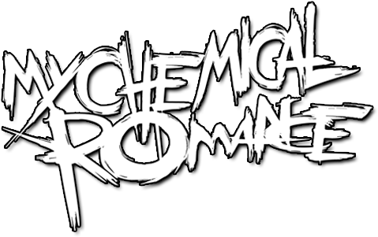

Az I Brought You My Bullets, You Brought Me Your Love (gyakran csak Bullets-nek rövidített) a My Chemical Romance első stúdióalbuma. Az album a banda többi albumától eltérően, tényleg emó. Az album 2002 július 23-án jelent meg, kétoldalúan megosztott kritikus fogadtatásra. Sokak szerették az MCR garage stílusát. Sokak szerették az énekes, Gerard Way gyakran rekedt hangját, mely az album dalainak érzelmeit még jobban átadta a hallgatóknak. Igaz, a Bullets ma már egy teljesen hangzást ír le az MCR történelmében, a rajongók ma már, több mint 24 évvel a megjelenése után különösen beleszerettek az albumba a befejezetlen, demószerű hangzása miatt.
| Dal neve | Személyes értékelésem |
|---|---|
| Romance | 9.8/10 |
| Honey, This Mirror Isn't Big Enough For The Two of Us | 8/10 |
| Vampires Will Never Hurt You | 9.9/10 |
| Drowning Lessons | 7.8/10 |
| Our Lady of Sorrows | 7/10 |
| Headfirst for Halos | 9/10 |
| Skylines and Turnstiles | 9.7/10 |
| Early Sunsets over Monroeville | 8/10 |
| This Is the Best Day Ever | 9.7/10 |
| Cubicles | 8/10 |
| Demolition Lovers | 10/10 |
A Three Cheers For Sweet Revenge a My Chemical Romance második stúdióalbuma. 2004 június 8-án jelent meg. Az album folytatja a Bullets végén elkezdett történetszálat, a Demolition Lovers-el. A történet egy fiatal párról szól, akik bűnözésből élnek meg. Egy nap, egy rendőrségi rajtaütés után a nő meghal, a férfi pedig elszökik. Sok rajongó szerint a lány neve Helena, mivel a zenei videóban is egy temetés látható. A történet szerint ez után a férfi köt egy egyességet az ördöggel, hogy ha eléjehoz 1000 gonosz ember lelkét, akkor újra együtt lehet szerelmével. Viszont a 999.-dik lélek után jön rá, hogy az ezredik az övé.
A Helena egy érdekes szám, mivel Gerard Way a nagymamájának emlékére írta. Amikor a Bullets turnéja alatt hallották meg, hogy Mikey és Gerard nagymamája, Elena Lee Rush elhunyt. Ez Gerardot különösen megviselte, szóval ezért írta és készíttette a zene videót egy temetésről.
Az album sok sikert ért el, sőt 3x platinumlemezzé lett kinevezve az USA-ban (több mint 3 millió eladott példány), 2x platinumlemezzé az Egyesült Királyságban, Kanadában meg 4x platinumlemezzé.
| Dal neve | Személyes értékelésem |
|---|---|
| Helena | 10/10 |
| Give 'Em Hell, Kid | 9/10 |
| To the End | 9/10 |
| You Know What They Do To Guys Like Us In Prison | 9.7/10 |
| I'm Not Okay (I Promise) | 9/10 |
| The Ghost of You | 9/10 |
| The Jetset Life Is Going To Kill You | 9.7/10 |
| Interlude | 8/10 |
| Thank You For The Venom | 9.7/10 |
| Hang 'Em High | 8/10 |
| It's Not A Fashion Statement, It's A Deathwish | 7/10 |
| Cemetery Drive | 7/10 |
| I Never Told You What I Do For A Living | 7/10 |
A Black Parade a My Chemical Romance harmadik stúdióalbuma. 2006 október 23-án jelent meg. A Black Parade hozta azt a My Chemical Romancet, amire mindenki aki hallott már róluk gondol. Nem csak a legismertebb dalaik nagy része származik erről az albumról, például a Welcome To The Black Parade, I Don't Love You, Cancer és a Famous Last Words.
Ez az album is, mint a Three Cheers For Sweet Revenge, egy koncepcióalbum. Ebben az esetben egy fő szereplőnk van, akit a rajongótábor csak "The Patient"-ként (A Páciens) emleget. A Páciens egy fiatal férfi, akinél miután rákot diagnosztizáltak, ,már csak pár napja van. A férfi ezt a pár napot azzal tölti, hogy visszatekint az életére. Visszatekint minden rosszra amit tett, és mindenkire, akit megsértett a leszaró hozzáállásával. Elején fél a haláltól, viszont az album végére már elfogadta sorsát. A Welcome To The Black Parade című számban a férfi a legkedvesebb emléke formájában van elkisérve a túlvilágra, neki ez egy indulózenekaros parádé, amire az apja elvitte gyerekként.
When I was a young boy, my father took me into the city to see a marching band. (Mikor kisfiú voltam, az apám elvitt engemet megnézni egy indulózenekaros parádét)
Az albumhoz sok videóklip is készült, viszont ezek között a leghíresebb a Welcome To The Black Parade videóklipje.
| Dal neve | Személyes értékelésem |
|---|---|
| The End. | 10/10 |
| Dead! | 10/10 |
| This Is How I Disappear | 9/10 |
| The Sharpest Lives | 9.7/10 |
| Welcome To The Black Parade | 10/10 |
| I Don't Love You | 10/10 |
| House of Wolves | 9.7/10 |
| Cancer | 10/10 |
| Mama | 10/10 |
| Sleep | 10/10 |
| Teenagers | 8/10 |
| Disenchanted | 8/10 |
| Famous Last Words | 10/10 |
| Blood | 8/10 |
A Danger Days a My Chemical Romance negyedik, és (hivatalosan) utolsó stúdióalbuma. Az album teljesen földbe tiporta az előző albumok témáit, és egy pop-punk, synth-pop hangzásra ment. 2010 november 22-án jelent meg. Az album mint azt megelőző kettő album is, egy koncepcióalbum.
Az album egy fikciónális háború után vesz részt, ami után minden szét lett rombolva. Két falkára bomlott az Egyesült Államok. A bureokratikus szupervállalat, a Better Living Industries (BL/ind), és a Killjoys, a kiközösített ellenálló kisebbség, akik a "zónákban" élnek. A BL/ind fő területét Battery City-nek hívják. Az album és az azt kibővítő képregény két külön dolog. Az album az eredeti Killjoys csapatot veszi középpontba. Az eredeti Killjoys csapat tagjai:
A történet szerint a kívül élők várnak egy megváltóra, "A lányra". Ez a lány a prófécia szerint fel fogja őket, és a Battery City-ben élő, manipulált embereket szabadítani.
A Danger Daysről jövő vélemények megosztók voltak. Sajnos a Danger Days viszont egy bukásnak számított. A banda két évvel késöbb felbomlott.
| Dal neve | Személyes értékelésem |
|---|---|
| Na Na Na (Na Na Na Na Na Na Na Na Na Na) | 10/10 |
| Bulletproof Heart | 9/10 |
| SING | 9.8/10 |
| Planetary (GO!) | 10/10 |
| The Only Hope For Me Is You | 9/10 |
| Party Poison | 9/10 |
| Save Yourself, I'll Hold Them Back | 9.7/10 |
| S/C/A/R/E/C/R/O/W | 9/10 |
| Summertime | 8/10 |
| Destroya | 8/10 |
| The Kids From Yesterday | 8/10 |
| Vampire Money | 8/10 |